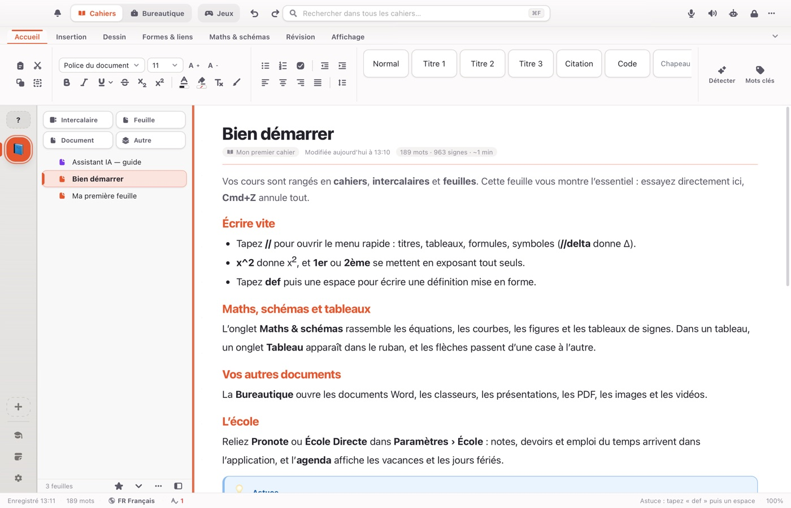

Tout ce qu’il faut pour travailler
Cahiers numériques
Des cahiers, des intercalaires et des feuilles, comme dans un classeur. Texte riche, écriture au stylet, formes, schémas et cartes mentales.
Maths et sciences
Équations, courbes, géométrie, tableaux de signes et de variations, opérations posées et schémas de sciences.
Bureautique intégrée
Ouvrez et modifiez les documents Word et OpenDocument, les classeurs Excel, les présentations PowerPoint, et annotez vos PDF.
Révisions
Fiches, jeux de révision et jeux de frappe pour apprendre à partir de vos propres cours.
Voix et IA locale
Dictée, lecture à voix haute et assistant IA qui tourne sur votre ordinateur.
L’école avec vous
Reliez Pronote ou École Directe : notes, devoirs et emploi du temps arrivent dans l’application, avec l’agenda et les vacances scolaires.
Télécharger Multibook
Dernière version publiée. Multibook se met ensuite à jour tout seul.
| Système | Fichier |
|---|---|
| Mac, Windows, Linux, Android | Toutes les versions |
Installer
Mac
Mac à puce Apple, macOS 11 ou plus récent. Glissez Multibook dans Applications. Multibook n’étant pas enregistré auprès d’Apple, ouvrez ensuite Réglages Système › Confidentialité et sécurité, puis choisissez Ouvrir quand même.
Windows
Windows 64 bits. Lancez le fichier .exe. Si Windows affiche un avertissement, cliquez sur Informations complémentaires, puis sur Exécuter quand même.
Android
Android 8 ou plus récent, appareil 64 bits. Ouvrez le fichier .apk et autorisez l’installation depuis votre navigateur.
Linux
Distribution de 2024 ou plus récente (Ubuntu 24.04, Debian 13, Fedora 39). AppImage, .deb ou .rpm.
Questions fréquentes
Multibook est-il gratuit ?
Oui. Il n’y a ni compte à créer ni clé à saisir.
Où sont gardées mes notes ?
Sur votre appareil. Le détail est dans les règles de confidentialité.
Puis-je relier mon agenda Google ?
Oui. Dans Paramètres › Outils › Agenda, « Se connecter avec Google » synchronise votre Google Agenda dans les deux sens. Les événements restent sur votre appareil ; voir les règles de confidentialité.
Puis-je l’utiliser dans une entreprise ?
Non. Multibook est distribué sous la licence PolyForm Noncommercial 1.0.0 : l’usage personnel, à l’école ou dans une association est autorisé, l’usage commercial ne l’est pas.